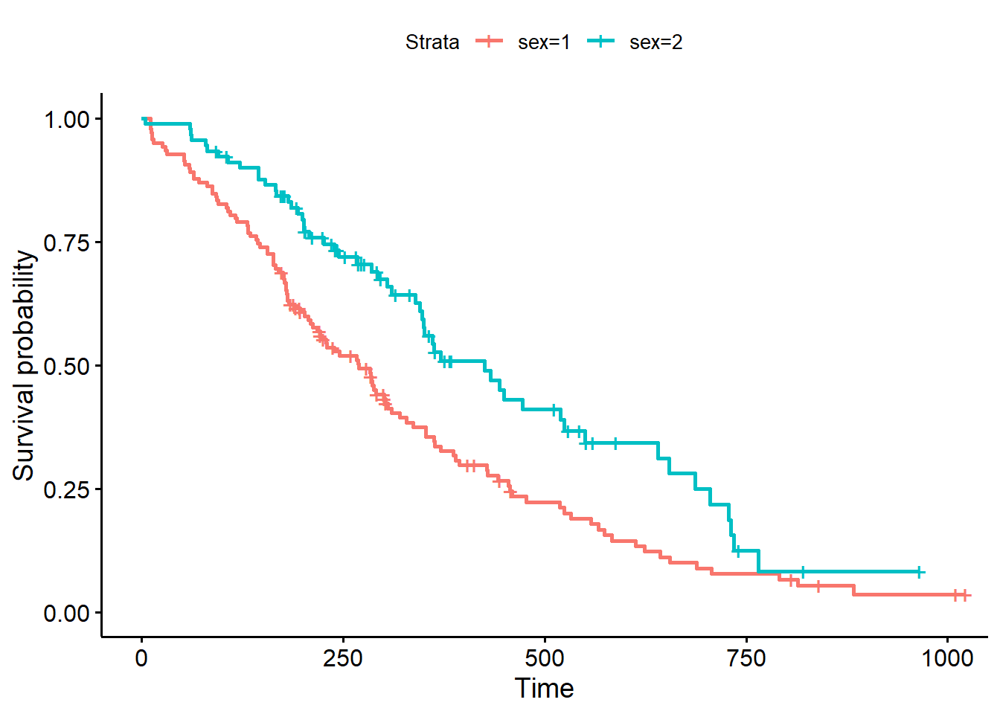

In the class on essential statistics we covered basic categorical data analysis – comparing proportions (risks, rates, etc) between different groups using a chi-square or fisher exact test, or logistic regression. For example, we looked at how the diabetes rate differed between males and females. In this kind of analysis you implicitly assume that the rates are constant over the period of the study, or as defined by the different groups you defined.
But, in longitudinal studies where you track samples or subjects from one time point (e.g., entry into a study, diagnosis, start of a treatment) until you observe some outcome event (e.g., death, onset of disease, relapse), it doesn’t make sense to assume the rates are constant. For example: the risk of death after heart surgery is highest immediately post-op, decreases as the patient recovers, then rises slowly again as the patient ages. Or, recurrence rate of different cancers varies highly over time, and depends on tumor genetics, treatment, and other environmental factors.
Definitions
Survival analysis lets you analyze the rates of occurrence of events over time, without assuming the rates are constant. Generally, survival analysis lets you model the time until an event occurs,1 or compare the time-to-event between different groups, or how time-to-event correlates with quantitative variables.
The hazard is the instantaneous event (death) rate at a particular time point t. Survival analysis doesn’t assume the hazard is constant over time. The cumulative hazard is the total hazard experienced up to time t.
The survival function, is the probability an individual survives (or, the probability that the event of interest does not occur) up to and including time t. It’s the probability that the event (e.g., death) hasn’t occured yet. It looks like this, where TT is the time of death, and Pr(T>t)Pr(T>t) is the probability that the time of death is greater than some time tt. SS is a probability, so 0≤S(t)≤10≤S(t)≤1, since survival times are always positive (T≥0T≥0).
S(t)=Pr(T>t)S(t)=Pr(T>t)
The Kaplan-Meier curve illustrates the survival function. It’s a step function illustrating the cumulative survival probability over time. The curve is horizontal over periods where no event occurs, then drops vertically corresponding to a change in the survival function at each time an event occurs.
Censoring is a type of missing data problem unique to survival analysis. This happens when you track the sample/subject through the end of the study and the event never occurs. This could also happen due to the sample/subject dropping out of the study for reasons other than death, or some other loss to followup. The sample is censored in that you only know that the individual survived up to the loss to followup, but you don’t know anything about survival after that.
Proportional hazards assumption: The main goal of survival analysis is to compare the survival functions in different groups, e.g., leukemia patients as compared to cancer-free controls. If you followed both groups until everyone died, both survival curves would end at 0%, but one group might have survived on average a lot longer than the other group. Survival analysis does this by comparing the hazard at different times over the observation period. Survival analysis doesn’t assume that the hazard is constant, but does assume that the ratio of hazards between groups is constant over time. This class does not cover methods to deal with non-proportional hazards, or interactions of covariates with the time to event.
Proportional hazards regression a.k.a. Cox regression is the most common approach to assess the effect of different variables on survival.
Cox PH Model
Kaplan-Meier curves are good for visualizing differences in survival between two categorical groups, but they don’t work well for assessing the effect of quantitative variables like age, gene expression, leukocyte count, etc. Cox PH regression can assess the effect of both categorical and continuous variables, and can model the effect of multiple variables at once.
Cox PH regression models the natural log of the hazard at time t, denoted h(t)h(t), as a function of the baseline hazard (h0(t)h0(t)) (the hazard for an individual where all exposure variables are 0) and multiple exposure variables x1x1, x1x1, ……, xpxp. The form of the Cox PH model is:
If you exponentiate both sides of the equation, and limit the right hand side to just a single categorical exposure variable (x1x1) with two groups (x1=1x1=1 for exposed and x1=0x1=0 for unexposed), the equation becomes:
h1(t)=h0(t)×eβ1x1h1(t)=h0(t)×eβ1x1
Rearranging that equation lets you estimate the hazard ratio, comparing the exposed to the unexposed individuals at time t:
HR(t)=h1(t)h0(t)=eβ1HR(t)=h1(t)h0(t)=eβ1
This model shows that the hazard ratio is eβ1eβ1, and remains constant over time t (hence the name proportional hazards regression). The ββ values are the regression coefficients that are estimated from the model, and represent the log(HazardRatio)log(HazardRatio) for each unit increase in the corresponding predictor variable. The interpretation of the hazards ratio depends on the measurement scale of the predictor variable, but in simple terms, a positive coefficient indicates worse survival and a negative coefficient indicates better survival for the variable in question.
Survival analysis in R
The core survival analysis functions are in the survival package. The survival package is one of the few “core” packages that comes bundled with your basic R installation, so you probably didn’t need to install.packages() it. But, you’ll need to load it like any other library when you want to use it. We’ll also be using the dplyr package, so let’s load that too. Finally, we’ll also want to load the survminer package, which provides much nicer Kaplan-Meier plots out-of-the-box than what you get out of base graphics.
Code
library(dplyr)
Attachement du package : 'dplyr'
Les objets suivants sont masqués depuis 'package:stats':
filter, lag
Les objets suivants sont masqués depuis 'package:base':
intersect, setdiff, setequal, union
Code
library(survival)library(survminer)
Le chargement a nécessité le package : ggplot2
Le chargement a nécessité le package : ggpubr
Attachement du package : 'survminer'
L'objet suivant est masqué depuis 'package:survival':
myeloma
The core functions we’ll use out of the survival package include:
Surv(): Creates a survival object.
survfit(): Fits a survival curve using either a formula, of from a previously fitted Cox model.
coxph(): Fits a Cox proportional hazards regression model.
Other optional functions you might use include:
cox.zph(): Tests the proportional hazards assumption of a Cox regression model.
survdiff(): Tests for differences in survival between two groups using a log-rank / Mantel-Haenszel test.
Surv() creates the response variable, and typical usage takes the time to event, and whether or not the event occured (i.e., death vs censored). survfit() creates a survival curve that you could then display or plot. coxph() implements the regression analysis, and models specified the same way as in regular linear models, but using the coxph() function.
Getting started
We’re going to be using the built-in lung cancer dataset that ships with the survival package. You can get some more information about the dataset by running ?lung. The help tells us there are 10 variables in this data:
Code
library(survival)?lung
démarrage du serveur d'aide httpd ... fini
inst: Institution code
time: Survival time in days
status: censoring status 1=censored, 2=dead
age: Age in years
sex: Male=1 Female=2
ph.ecog: ECOG performance score (0=good 5=dead)
ph.karno: Karnofsky performance score as rated by physician
pat.karno: Karnofsky performance score as rated by patient
meal.cal: Calories consumed at meals
wt.loss: Weight loss in last six months
You can access the data just by running lung, as if you had read in a dataset and called it lung. You can operate on it just like any other data frame.
Notice that lung is a plain data.frame object. You could see what it looks like as a tibble (prints nicely, tells you the type of variable each column is). You could then reassign lung to the as_tibble()-ified version.
Check out the help for ?Surv. This is the main function we’ll use to create the survival object. You can play fast and loose with how you specify the arguments to Surv. The help tells you that when there are two unnamed arguments, they will match time and event in that order. This is the common shorthand you’ll often see for right-censored data. The alternative lets you specify interval data, where you give it the start and end times (time and time2). If you keep reading you’ll see how Surv tries to guess how you’re coding the status variable. It will try to guess whether you’re using 0/1 or 1/2 to represent censored vs “dead”, respectively.
Try creating a survival object called s, then display it. If you go back and head(lung) the data, you can see how these are related. It’s a special type of vector that tells you both how long the subject was tracked for, and whether or not the event occured or the sample was censored (shown by the +).
Now, let’s fit a survival curve with the survfit() function. See the help for ?survfit. Here we’ll create a simple survival curve that doesn’t consider any different groupings, so we’ll specify just an intercept (e.g., ~1) in the formula that survfit expects. We can do what we just did by “modeling” the survival object s we just created against an intercept only, but from here out, we’ll just do this in one step by nesting the Surv() call within the survfit() call, and similar to how we specify data for linear models with lm(), we’ll use the data= argument to specify which data we’re using. Similarly, we can assign that to another object called sfit (or whatever we wanted to call it).
Code
survfit(s~1)
Call: survfit(formula = s ~ 1)
n events median 0.95LCL 0.95UCL
[1,] 228 165 310 285 363
Code
survfit(Surv(time, status)~1, data=lung)
Call: survfit(formula = Surv(time, status) ~ 1, data = lung)
n events median 0.95LCL 0.95UCL
[1,] 228 165 310 285 363
These tables show a row for each time point where either the event occured or a sample was censored. It shows the number at risk (number still remaining), and the cumulative survival at that instant.
What’s more interesting though is if we model something besides just an intercept. Let’s fit survival curves separately by sex.
Now, check out the help for ?summary.survfit. You can give the summary() function an option for what times you want to show in the results. Look at the range of followup times in the lung dataset with range(). You can create a sequence of numbers going from one number to another number by increments of yet another number with the seq() function.
And we can use that sequence vector with a summary call on sfit to get life tables at those intervals separately for both males (1) and females (2). From these tables we can start to see that males tend to have worse survival than females.
Now that we’ve fit a survival curve to the data it’s pretty easy to visualize it with a Kaplan-Meier plot. Create the survival object if you don’t have it yet, and instead of using summary(), use plot() instead.
There are lots of ways to modify the plot produced by base R’s plot() function. You can see more options with the help for ?plot.survfit. We’re not going to go into any more detail here, because there’s another package called survminer that provides a function called ggsurvplot() that makes it much easier to produce publication-ready survival plots, and if you’re familiar with ggplot2 syntax it’s pretty easy to modify. So, let’s load the package and try it out.
Code
library(survminer)ggsurvplot(sfit)

This plot is substantially more informative by default, just because it automatically color codes the different groups, adds axis labels, and creates and automatic legend. But there’s a lot more you can do pretty easily here. Let’s add confidence intervals, show the p-value for the log-rank test, show a risk table below the plot, and change the colors and the group labels.
Code
ggsurvplot(sfit, conf.int=TRUE, pval=TRUE, risk.table=TRUE, legend.labs=c("Male", "Female"), legend.title="Sex", palette=c("dodgerblue2", "orchid2"), title="Kaplan-Meier Curve for Lung Cancer Survival", risk.table.height=.15)